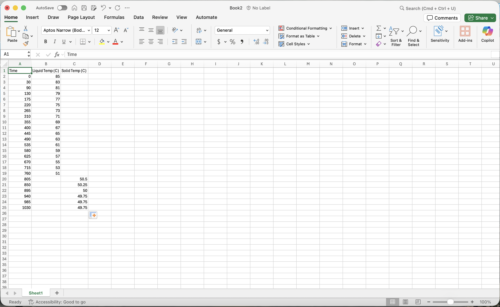

Lab 2 Data Analysis
This weeks lab is very simple to perform but the data analysis process can be very involved, especially for those unfamiliar with microsoft Excel. Below are tips and a procedure for creating graphs in Excel online and the Excel app. As a Baylor Student, you have free access to download the excel app and I highly recommend doing this and becoming familiar with its basic functions.
Data Input:
The input procedure is the same for each of the different spreadsheet programs but the graph making procedure is not. The best way to input the data for this experiment is to have 3 columns
| Time (s) | Liquid Temperature (C) | Solid Temperature (C) |
|---|---|---|
| 0 | 85 | ---- |
Begin inputting data into the "Liquid Temperature" column. When temperature readings change \(< 0.5\) degrees C between measurements, start inputting data into the "Solid Temperature" column. This means that the "solid temperature" column will be empty (not filled with 0's) for the majority of readings and the "liquid temperature" column will be empty for the last few. This setup will help later on when making your graphs.(See Input Below)
 NOT REAL DATA!
Creating Graphs
This process is different between excel on the web and the desktop app. I am most familiar with the Excel desktop app but I did my best to show instructions for other common solutions.
Create Empty Chart
There are a few ways to create a graph in Excel. The way I'm presenting is not the most efficient but it is the most versatile and gives you a lot of control over the graph being made.
To begin, click away from any of your data into a blank cell. In the ribbon at the top of the page, select "Insert". You will see little graphics of the different chart styles available; select the scatter plot (only data points, no line connecting them). You should see a blank square appear on the spreadsheet.
In the ribbon, there is now a new tab available titled "Chart Design" (or "Chart Options"). This is where we will be able to create and edit our graphs, so click on this tab.
Add Data to Chart
On the far right-hand side of the menu there is a button that says "Select Data". When you click this button, a new screen will appear with many options. The only things we will use in this screen are the + button, the "Series Name", "X values", and "Y values" fields.
To begin adding data to our graph, click the + button. You will see "Series 1" appear in the white box above. Click "Series 1" and the "Series Name", "X values", and "Y values" fields on the right will fill with initial data. We can override this data to input our own.
Rename "Series 1" to be "Liquid State".
Click the box next to "X values" and the "Select Data" window will disappear. Click and drag all of the Time data in column A, but do not include A1 which has the label "Time". Once selected, hit Enter and you will be brought back to the Select Data window.
Next, repeat the process for "Y values". Click the box next to the Y values field and select all of the temperatures including blank spaces in column B for the measured times (exclude B1 but include blank cells).
To add "Solid State" data, click the + button again. This creates "Series 2". Rename it "Solid State". Use the same Time column for X values. For Y values, select column C excluding C1 but including all blank spaces.
Click OK to close the window. You should now see two data sets, one orange and one blue.
Add Chart Elements
Click "Add Chart Element" under the "Chart Design" tab.
To add trendlines: - Click Add Chart Element → Trendline → Linear. - Select one series. - Repeat for the second series.
To display the equation: - Double-click a trendline. - In the "Format Trendline" panel, check "Display Equation on chart". - Repeat for the second trendline.
Add the remaining elements using Add Chart Element: - Chart Title - Axis Titles (Primary Horizontal and Primary Vertical) - Legend Double-click any text box to rename it.
The Microsoft Excel application is the industry standard for almost every profession, you should learn to use it as soon as possible
Create Empty Chart
Click away from your data into a blank cell.
In the ribbon, select "Insert" and choose the scatter plot option (markers only, no connecting line).
An empty chart will appear.
Add Data to Chart
When the chart is created, it will automatically want series 1 data, select time and liquid temperature columns.
After adding series 1, click the "+ Add Field" then "Add new field" buttons. Select X Values then click and drag down your temperature column. Click the green check box. Select the Y values field and click and drag down your "Solid Temperature" column. When you have selected the X and Y data, click apply.
To add names to the series, click the pencil icon next to "series 1" or "series 2" and rename them "Liquid State" and "Solid State" respectively.
Add Chart Elements
With the chart selected, change from the "Data" tab to the "Format" tab. Click Series "Liquid State" to expand a menu. At the bottom of this menu you can toggle the "trendline 1" button to add a trendline. Once this button is toggled, scroll down again and toggle the equation and values
From the ribbon, select "Axis Titles" and add primary vertical and horizontal. Double-click text boxes to rename.
Once you have both equations \(y = m_1 x + b_1\) and \(y = m_2 x + b_2\) we can find the freezing point. The two lines will intersect at time, \(x\), when the solution freezes. To find this \(x\), set both equations equal to each other
After this you will have the freezing time \(x\), now plug this x value into either equation to find the freezing temp.
If you have any questions, please reach out to me via email.